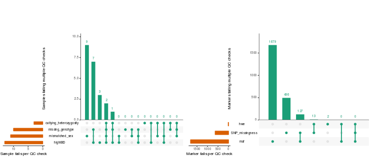

plinkQC
plinkQC is a R/CRAN package for genotype quality control in genetic association studies. It makes PLINK basic statistics (e.g.missing genotyping rates per individual, allele frequencies per genetic marker) and relationship functions easily accessible from within R and allows for automatic evaluation of the results.
plinkQC generates a per-individual and per-marker quality control report. A step-by-step guide on how to run these analyses can be found here.
Individuals and markers that fail the quality control can subsequently be removed with plinkQC to generate a new, clean dataset.
plinkQC facilitates an ancestry check for study individuals based on comparison to reference datasets. The processing of the reference datasets is documented in detail here.
Removal of individuals based on relationship status via plinkQC is optimised to retain as many individuals as possible in the study.

Installation
The current github version of plinkQC is: 0.2.3 and can be installed via
The current CRAN version of plinkQC is: 0.2.2 and can be installed via
A log of version changes can be found here.